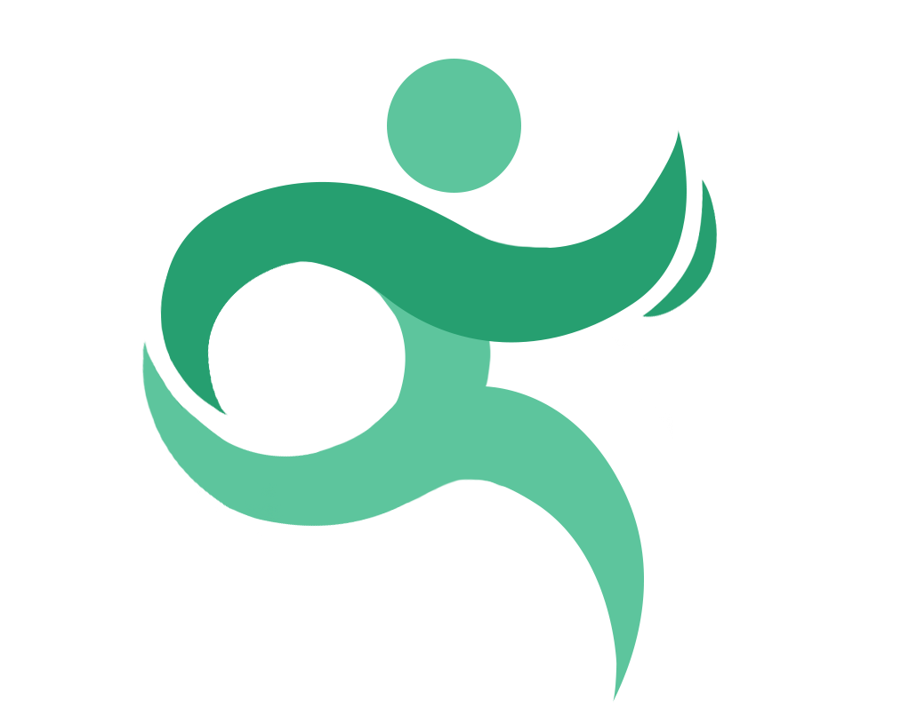
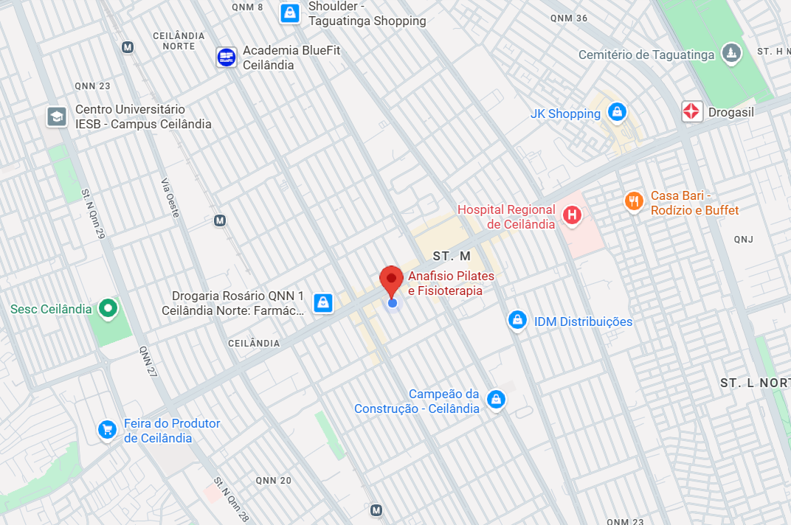

Conheça a Clínica
A AnaFisio nasceu com o propósito de oferecer um atendimento humanizado e especializado, focado na recuperação, prevenção e promoção da saúde. Nossa equipe trabalha com dedicação para proporcionar tratamentos personalizados, respeitando as necessidades e objetivos de cada paciente.
Em um ambiente acolhedor e moderno, buscamos unir conhecimento técnico, cuidado e atenção em cada etapa do processo terapêutico. Acreditamos que o movimento é essencial para a qualidade de vida e, por isso, estamos comprometidos em ajudar nossos pacientes a conquistarem mais bem-estar, autonomia e confiança no dia a dia. Na AnaFisio, cada evolução é uma conquista compartilhada.
Agende sua Consulta

Localização
🕒 Seg-Sab
Ceilândia Sul QNM 01 Conj. D lote 8
Estúdio Shalon, salas 3 e 4
Ceilândia, Brasília - DF, 72215-014
📞 Telefone
(61) 9 9529-1692
Abrir rota no Google Maps
Informações úteis
Dúvidas Frequentes
A fisioterapia é indicada para pessoas de todas as idades, desde crianças até idosos. Ela pode auxiliar na prevenção de lesões, recuperação de cirurgias, tratamento de dores, reabilitação física e melhoria da qualidade de vida.
Não necessariamente. Em muitos casos, é possível realizar uma avaliação fisioterapêutica diretamente na clínica. Caso seja necessário, nossa equipe poderá orientar sobre exames ou acompanhamento médico complementar.
A quantidade de sessões varia de acordo com o quadro clínico, os objetivos do tratamento e a resposta de cada paciente. Após a avaliação inicial, é elaborado um plano terapêutico personalizado.
Não. Além da reabilitação de lesões, a fisioterapia também atua na prevenção de problemas, melhora da postura, fortalecimento muscular, alívio de dores e promoção da saúde e bem-estar.
Redes Sociais
Fique por dentro das nossas notícias
CONECTE-SE CONOSCO!
Siga nosso perfil e acompanhe nossos conteúdos.
Compartilhamos informações, orientações e novidades para
ajudar você a cuidar melhor da sua saúde e bem-estar no dia a dia.
@anafisio.brasilia